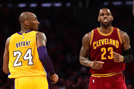
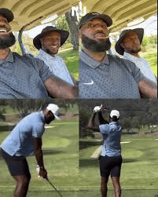
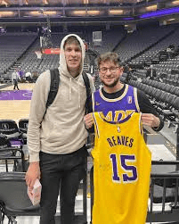

I began watching the NBA in 2017, when LeBron James was on the Cleveland Cavaliers. He was one of the only players I knew at the time, and I continued to watch him in the years to come. In 2019, LeBron signed with the Los Angeles Lakers, and my fanbase changed from the Cavaliers to the Lakers. Ever since then, I've been following the Lakers daily, keeping up with recent news, following the players' lives, and watching the games on a nightly basis.

My favorite aspect about the Laker organization are the players. Each NBA player is different, with different backgrounds and divergent play styles. Play styles are determined by the player attributes and how they use their attributes to benefit team wins. Attributes that Laker players posses include: shooting, slashing, dribbling, rebounding, passing, etc. These specific attributes make the Lakers unique, having multiple players on the team who's play styles contain these attributes. Another detail I like about the Lakers are their ambition to be a team on the court as well as off the court. The players are constantly seen hanging out together, whether it be on the golf course or going out to team dinners, you will rarely catch the players by themselves.
If you're wanting to get into the NBA, I'd recommend tuning into play-off games, where the intensity and focus is at an all-time high. Find a teams style of play that you enjoy compared to other teams. I live in Louisiana and root for the Pelicans from time to time, but I also like to go through the entire league and see how other teams are looking throughout the season. However, if you're wanting to get into the Los Angeles Lakers, I'd recommend watching some highlights of the players on Youtube. There's many highlights to choose from and the excitement the videos bring would make you want to turn on the games and experience the excitement in real time. Trust me, the Lakers are the most entertaining team in the league.

As of right now, I follow a couple of laker fan pages on Instagram. @AronCohen the owner of the @lakersalldayeveryday Instagram account is constantly active, posting everything Lakers related and sometimes granted special priveleges within the organization. He can be seen with Austin Reaves in the photo to the left. Another account I previously mentioned is @purehoops, an account who posts animated pictures of every laker game throughout the season that includes specific details about the game.